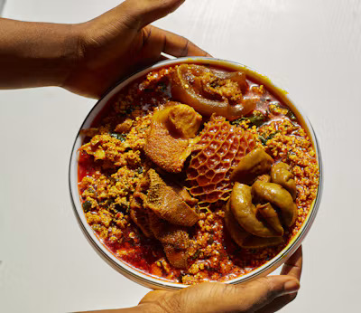

Nigerian Egusi Soup

Description
NIgerian Egusi Soup is a popular traditional soup made with ground melon seeds, vegetables, palm oil, and assorted mear or fish. It is commonlyenjoyed with swallow foods such as pounded yam, eba, and fufu.
Ingredients
- 2 cups of ground egusi (melon seeds)
- Assorted meat
- Stockfish
- Smoked fish
- Fresh spinach or ugu leaves
- Palm oil
- Onions
- Ground crayfish
- Fresh pepper
- Seasoning cubes
- Salt to taste
Steps
- Season the assorted meat with onions, salt, and seasoning, then cook until tender.
- Soak the stockfish and smaoked fish,them prepare them for cooking.
- Heat palm oil in a pot over medium heat.
- Add chopped onions and ground pepper, then stir briefly.
- Add the ground egusi and stir to combine.
- Add meat stock and allow the egusi to cook.
- Add the cooked meat, stockfish, smoked fiah, and crayfish.
- Allow the soup to simmer until properly cooked.
- Add the vegetables and cook for a few more minutes.
- Taste, adjust the seasoning, and serve hot.
Home